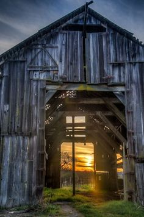

Ao cehagr no bar, uma mulher claremente desorientada e em estado de choque chama a atencção do nosso detevide.
Ela disse ao investigador Salahadin: Eu vi uma besta fera levando o casal para um casarão abandonado ao sul do bar
Chegando no casarão slahadin não encontra pista alguma e acaba sendo morto por algo que passou por ele e o feriu de forma mortal e não pode ser visto
Salahadin não é o investigador que irá desvendar esse crime
Perdeu tempo ,volte ao inicio
 Perdeu